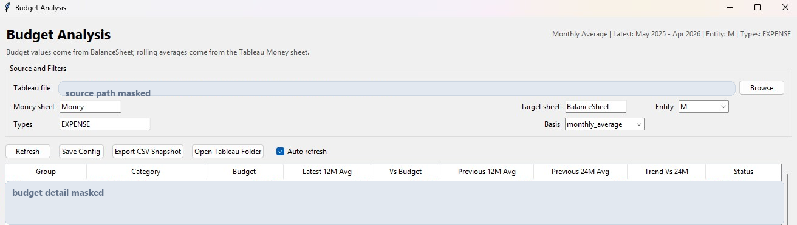
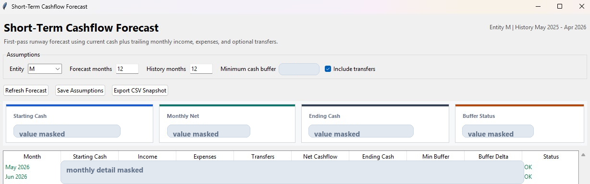
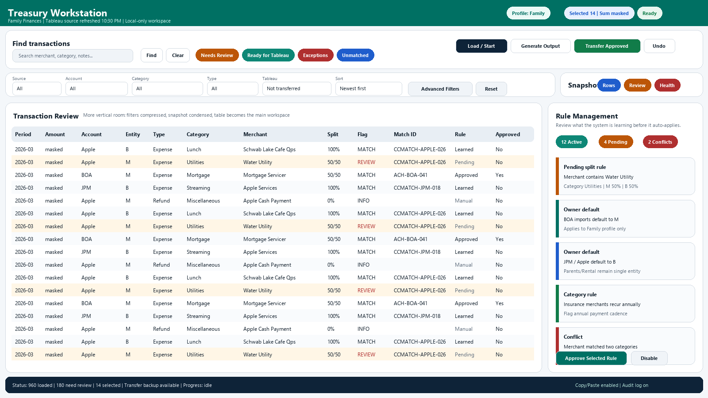

Featured build
Treasury Workstation
Finance operations command center for cashflow forecasting, budget analysis, reconciliation, profile-aware workflows, and Tableau handoff.

Problem
Manual treasury workflows create friction across reconciliation, reporting, data hygiene, forecasting, and Tableau source updates. The work is repeatable, but the context is scattered across spreadsheets, exports, rules, and manual review steps.
Build
A Python desktop workstation with profile-based data handling, budget analysis, account reconciliation, cashflow forecast, backup-aware Tableau export, undo support, and health checks.
Impact
Reduced manual steps, clearer exception review, repeatable outputs, and a cleaner operational control surface for finance work that would otherwise live in disconnected files.
Tools
Gallery
Sanitized interface views.
These screens show the shape of the work without exposing account, family, or private financial details.



Centralizes recurring finance workflows.
Preserves review and undo paths for safer exports.
Turns spreadsheet work into repeatable operating steps.
Frames data-health issues before downstream reporting.